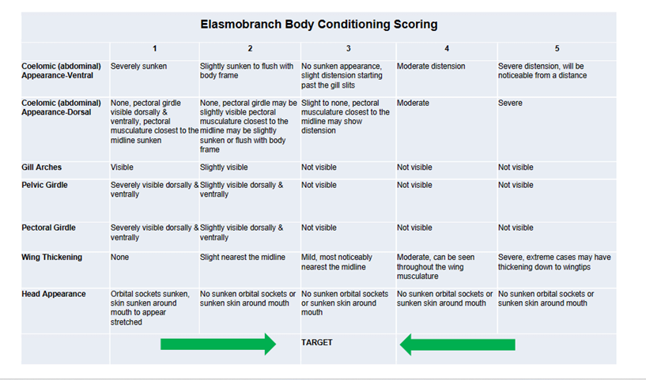
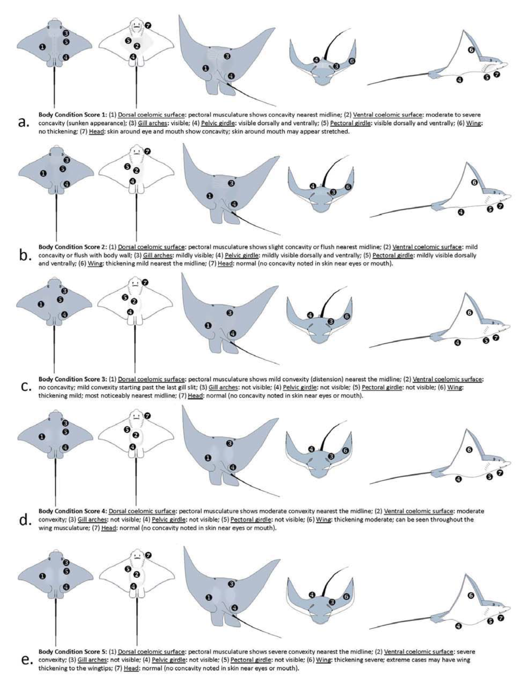

9 Health & Welfare
The Aquarium’s primary function is to keep it’s display animals alive and in good condition, because they are the main attraction. A healthy animal is an animal that is free of disease or injury.
The presence of a disease pathogen alone is not usually enough to cause illness. Disease outbreak investigations must always be approached holistically, as diseases are an expression of the interplay between the animal’s environment and immune status as well as the pathogen (Jones 2014).
Animal health and animal welfare are closely interlinked. This is best explained through the OIE (2019) Animal Welfare definition:
“Animal welfare means the physical and mental state of an animal in relation to the conditions in which it lives and dies. An animal experiences good welfare if (as indicated by scientific evidence) the animal is healthy, comfortable, well nourished, safe, is not suffering from unpleasant states such as pain, fear and distress, and is able to express behaviours that are important for its physical and mental state.
Good animal welfare requires disease prevention and appropriate veterinary care, shelter, management and nutrition, a stimulating and safe environment, humane handling and humane slaughter or killing. While animal welfare refers to the state of the animal, the treatment that an animal receives is covered by other terms such as animal care, animal husbandry, and humane treatment” (OIE 2019).
9.1 Health monitoring and signs of illness in aquatic animals
Aquarium staff should always be on the look-out for any of the following signs:
- Decrease in appetite.
- Lethargy
- Swimming less or slower than normal.
- Obvious wounds, spots, or growths.
- Buoyancy disorders
- Swimming at the top, or only at the bottom.
- Any other abnormal swimming behaviour.
- Swimming at the top, or only at the bottom.
- Change in colour.
- Flashing
- Rubbing against objects as if itchy.
- Swollen abdomen.
- Eye abnormalities/pop eye.
- Poor body condition.
- Losing weight.
The body condition of elasmobranchs should be regularly monitored and scored according to a body condition score chart (Figure 9.1).


In order to accurately self-assess animal welfare, a practical Welfare Assessment Tool using the 5 Domains Model, such as from the Zoo and Aquarium Association Australasia, should be applied at least three times a year and records kept on file, in addition to daily subjective monitoring. The document mentioned can be found attached in the Appendix.
9.2 Procedure to follow when an animal dies
As aquatic species such as fish decompose very rapidly, the postmortem changes can quickly mask any signs of disease.
- Necropsies should be performed within 24 hours if the animal can be refrigerated
- DO NOT freeze dead fish!!
- The animal must be kept in one piece and not be opened.
- If refrigeration is not possible due to size or other factors.
- Necropsy should be performed within 2 hours of death
- Keep cold on ice while waiting for necropsy (Gribbles Veterinary Pathology 2023???).
- Necropsies should be performed by a veterinarian or an aquarist with sufficient training if no veterinarian is available.
- Carcasses should be disposed of according to local Municipality guidelines to ensure they are not consumed by the public.
9.3 Humane euthanasia of aquatic species
Occasionally animals need to be euthanized for either disease control purposes or to alleviate suffering.
Humane euthanasia involves killing an animal using a method that results either in immediate death, or in a way that does not cause further preventable pain and suffering (OIE 2019).
In the case of fish, they can be euthanized in the following ways:
- Overdosing with an appropriate anaesthestic (such as phenoxyethanol at 1 ml/l).
- Decapitation.
- The fish can be stunned prior to decapitation if size permits.
- After decapitation, the brain should be destroyed by pithing (inserting a metal rod and vigorously moving it around).
- Pithing is important as fish can remain conscious even after the head is severed (Leary et al. 2020).
- Cranial concussion (blunt force trauma)
- Followed by pithing, cervical dislocation or exsanguination (bleeding out by cutting over the gill arches).
- Anaesthesia
- Followed by pithing, decapitation, cervical dislocation or exsanguination.
The ideal process will depend on the size of the fish, but the preferred method is always initial anaesthesia followed by one or more of the physical techniques (Leary et al. 2020).
Invertebrates, such as lobsters and sea stars, should be euthanized in the following ways:
- Overdosing with an appropriate anaesthetic.
- Followed by either pithing, boiling or freezing (Leary et al. 2020).
9.3.1 Tool preparation
In addition to what is needed for the quarantine protocol, the following should be kept on hand:
- Sharp knives and scalpel blades to be used for postmortems and euthanasia
- Standard dissection kit for postmortems
- Steel rod or other suitable tool for pithing